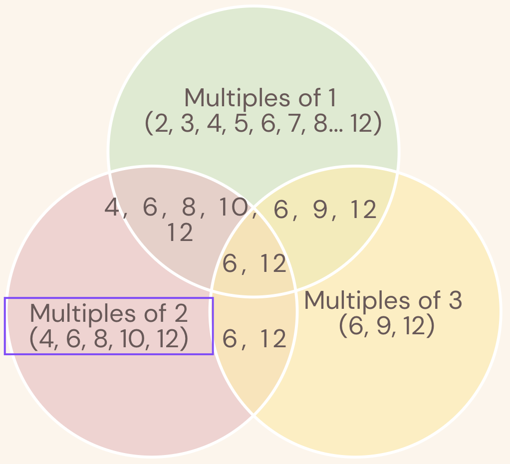

Consider all integer combinations of ab for 2 ≤ a ≤ 5 and 2 ≤ b ≤ 5:
22=4, 23=8, 24=16, 25=32
32=9, 33=27, 34=81, 35=243
42=16, 32=64, 44=256, 45=1024
52=25, 53=125, 544=625, 55=3125
If they are then placed in numerical order, with any repeats removed, we get the following sequence of 15 distinct terms:
4, 8, 9, 16, 25, 27, 32, 64, 81, 125, 243, 256, 625, 1024, 3125
How many distinct terms are in the sequence generated by ab for 2 ≤ a ≤ 100 and 2 ≤ b ≤ 100?
This is a nice example of Principle of Inclusion and Exclusion. I won't go deep into what it is, but essentially, it's a nice way of calcualting when overlaps occur
Clearly, we can see thata 2^4 and 4^2 will overlap. The question is, how many of such overalsp exist?
Consider, a = 5, 6, 7, 10. The only overlaps that's possible is when a = 25, 36, 49, 100. Notice that these are basically squares of the lower a's. Sure, cubes of these can overlap as well, but these exceed 100. Using a = 5, 6, 7, 10. There are exactly 99 numbers that cna formed since (b = 2 through 100). But, 25^2 = 5^4. This overlaps with 5^4. So these a^2 powers go from 4 to 200 with b going from 2 to 100. The lower powers of these lower a's: $$ 2, 3, 4, 5, 6, 7, .... 100 $$ While squares of a go: $$ 4, 6, 8, 10, 12 .... 200 $$ How many overlaps are there? It's basically every multiples of 2 from 4 to 100, which is 49. This works for each a = 5, 6, 7, 10. Making total unique number: (198 - 49) * 4 = 576.
Ok, How do we deal with 2, 3, 4, 8, 9? Consider 2, then 2 can overlap with 2, 4, 8, 16, 32, 64. The powers of each of these in base 2 is : $$ 2: 2, 3, 4, 5, 6....100 $$ $$ 4: 4, 6, 8, 10, 12, 14, 16, ... 200$$ $$ 8: 6, 9, 12, 15, 18, 21 ... 300$$ $$ 16: 8, 12, 16, 20, 24 ... 400$$ $$ 32: 10, 15, 20, 25, 30 .. 500$$ $$ 64: 12, 18, 24, 30, 36, 42 ... 600 $$ The question we are asking is, how many unique numbers are there in this set?
It might be easier with a venn diagram only showing numbers 1-12:

To calculatae the unique numbers, we can first combine the total number of elements.
Then we look at what any two sectors have in common. However, if we subtract each of those
common sectors, we will have taken 6, 12 away from the answer. See for yourself.
Hence, we must add what all three common sectors have in common. This is basically the essence
of Principle of Inclusion and Exclusion (PIE). We can extend this to higher orders.
So for powers of 2, we have total of 99 *6 elements (6 powers) There are 6 choose 2 ways of choosing 2 sectors, and their group size is: 436 And now three sectors common: 242 And four: 88 And five: 17 And size: 1 (LCM of 2, 3, 4, 5, 6 = 60) For a total of : $$ 99*6 -436 + 242 - 88 + 17 - 1 = 328
We can do same thing for 3. 4, 8, 9 are included already since they are powers of 2, 3
We know that every a>10 will have 0 overlaps since a^2 > 100. So, a from 11 to 100 (have to remove 16, 25, 36, 49, etc.. for a total of 81) will have full b 2:100 for a totala of 99 * 81 = 8019
Answer: 9183
Runtime: n/aa